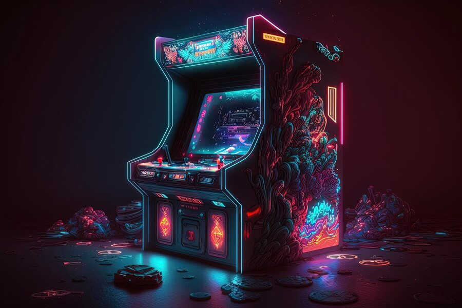

The So Long project at School 42 was a difficult experience for me. Although I learned how to deal with dynamic memory management and manipulate complex data structures, I found the process of creating the game quite laborious. The need to manage both graphics, user events and collisions made the project complex and sometimes daunting. Additionally, the debugging and optimization phase to ensure smooth performance was time-consuming and stressful. Finally, the steep learning curve made me feel overwhelmed at times, even though I was ultimately able to deliver a working product. In summary, although the So Long project strengthened my technical skills, I found completing it stressful and less rewarding than other projects at the school.
